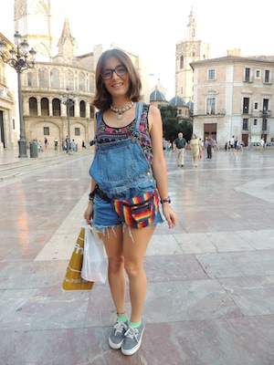
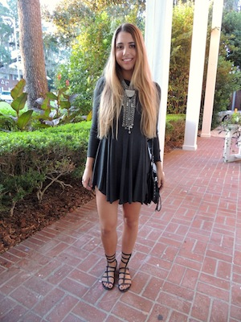
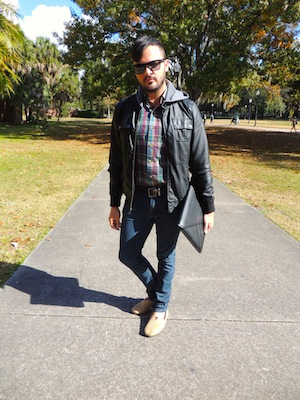

Allow me to introduce myself...
My name is Victoria Messina and I have a passion for writing. I'm a third-year journalism student at the University of Florida (can I get a "Go Gators"?) Although I could use this space to tell you about how I grew up in Tampa or that I have an obsession with quirky patterned socks, I'll spare you and cut to the chase. I'm here to tell you about myself and why I'm fit for an internship or job in the journalism industry.
I know how to manage my time.
Time management is an absolute necessity for me to make it through every day alive. It's quite the challenge to balance a full college course load with my editing and writing requirements (see my portfolio page to see exactly what I edit and write about!). But I always get it all done on time because I can prioritize my time responsibly and appropriately. Although this usually translates to skipping nights out on the town with friends, I know that those sleepless nights will pay off in the future, and I truly enjoy all the time I spend writing and editing outside of my courses. While studying abroad this summer in Valencia, Spain, I always set aside ample time to write my CollegeFashionista articles despite the constant temptation to wander through the beautiful city.
I'm a leader.
As the new Campus Correspondent/Editor-in-Chief of the University of Florida branch of Her Campus, I am in charge of a team of nearly 70 girls divided into four "teams": editorial, PR/events, social media and executive. I lead weekly meetings for each separate team in order to make sure that our branch of Her Campus' website runs smoothly. We are a "PINK" level chapter — the highest level attainable — a standing that only 13 out of 240+ chapters have. In order to maintain that ranking, my constant leadership is vital; that means being available 24/7 for any questions or concerns from team members and staying organized with editorial deadlines, meeting agendas and event planning.
But I'm also a team player.
Although I'm now the leader of nearly 70 girls, I still see myself as an equal team member. I'm just as responsible for the "dirty work" — passing out promotional fliers to students, chalking the sidewalks of campus and running errands to get supplies before on-campus HC events. My position as Campus Correspondent wasn't simply placed on my lap one day; I had to work to get there, and that means starting as a writer and working my way up the ranks to get to where I am today. Since day one, I've always made sure to approach every fellow team member with respect, no matter what my position may be. I understand the intricacies of working in groups and that no two team members are the same. I'm always willing to work with others and make sure to listen to every criticism and idea. I truly appreciate working with others toward a common goal; nothing beats the feeling of successfully executing an event and knowing that you got there with the help of awesome team members.
I work well under pressure.
Tight deadlines are the norm for a day in the life of Victoria Messina. This past semester as senior editor of Her Campus, I had a two-day time span to read, edit and upload 18 articles and blog posts to the Her Campus website for publication, on top of homework for four classes. Unfortunately, sometimes writers and bloggers do not meet their deadlines, thus making it harder for me to meet my editing deadline. However, I'm usually able to notice the problem in time and find a solution to the problem by working together with the team member. I'm able to approach issues in a calm and mature manner and I'm always willng to cater to the needs of people I work with.
I have an eye for fashion.
Whether I'm planning what to wear to class or scoping out students to photograph and write about for my CollegeFashionista internship, I like to think I have an eye for what works and what doesn't in terms of fashion. I have a personal style blog, fringeandfreespirits.wordpress.com, in which I write about my personal style and give style tips to fellow fashion lovers. I have my own personal style, which I sum up as "modern-day bohemian skater meets wannabe Californian stuck in Florida," but I also have a sincere appreciation for the unique styles of people around me. Below are a few photos I've taken of fashionistas/os during my internship with CF. Feel free to click on them to read each corresponding article on the CollegeFashionista website!
  